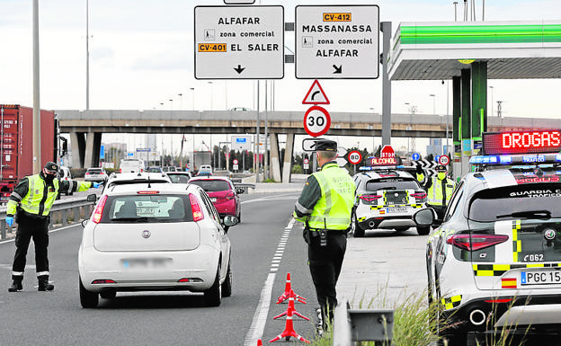
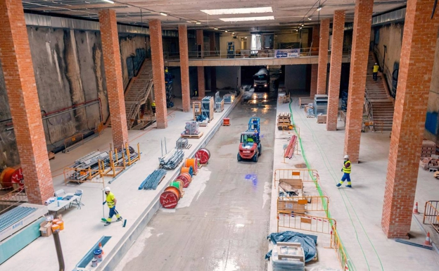

Policías y guardias civiles admiten sentirse confusos ante el límite de los «allegados» y constatan la dificultad para controlar todos los accesos entre regiones
Lo que no dicte el sentido común, el civismo, la obediencia o la cautela de cada familia ante las restricciones navideñas por la pandemia no lo va a imponer un policía o un guardia civil. Está sería, a grandes rasgos, la valoración que realizan policías y guardias consultados por LAS PROVINCIAS en relación al paquete de medidas anunciadas por Gobierno y Generalitat para frenar la expansión del coronavirus en los encuentros de Navidad. Si bien consideran que las infracciones ante el toque de queda son más sencillas de 'cazar' al estar sujetas a un objetivo criterio temporal, la vigilancia se complica y difumina en cuestiones como los polémicos «allegados», el límite de 10 personas en cada casa, la «causa justificada» o el reto de poner criba a todos los pasos entre regiones para garantizar el cierre perimetral. Lo resume, de una manera tajante, Francisco Javier García, responsable de la Asociación Unificada de Guardias Civiles en Alicante: «En una palabra… Imposible», zanja ante el requerido cierre de la Comunitat. «Nuestras vías de comunicación son muy diversas, autovías, carreteras nacionales, vía secundarias, caminos entre campos... Habría infinidad de sitios que controlar y con los actuales efectivos no se puede hacer un cierre perimetral real y absoluto». La realidad que se impone es la de los controles selectivos para intentar hacer cumplir la norma hasta lo humanamente posible. Similar desconcierto ante el concepto del «allegado» o frente a los límites de hasta diez personas en los encuentros navideños. ¿Cómo compruebo yo si alguien me dice que va a cenar a casa de su tío y luego acaba en otro punto? O cuántos van a a quedar en un domicilio. No tenemos tantos medios ni una bola para saber si lo que nos dicen es verdad o mentira«, lamenta el guardia. El representante de AUGC echa de menos «un modelo de justificante para hacer los desplazamientos» y que así se pueda discernir algo mejor cuál conviene frenar y cuál no. «Al final», resume, «a las fuerzas de seguridad sólo nos queda el sentido común o la intuición para diferenciar qué causa es justificada y cuál no ante las excusas que pone la gente». ¿Refuerzo con más agentes? «Tampoco. En estas fechas hay personal de vacaciones y en la Guardia Civil más, si cabe, tras permisos y vacaciones suspendidos durante el estado de alarma. Habrá un 30 o 40% menos de personal a no ser que se detraigan de otras unidades». Similar crítica lanza Juan José Tocón, guardia portavoz de la asociación en Valencia «Nada de refuerzo. La carga de trabajo, ya de por sí conflictiva en estas fechas, se multiplica por la escasez de personal». El cumplimiento de estas funciones, augura, «derivará en una pérdida de derechos laborales e impedimentos en la conciliación familiar de los guardias civiles». Según Sebastián Gómez, responsable de Jupol en Valencia, entre la Policía Nacional también hay confusión ante la figura del «allegado» por lo amplio del término. «Escapa a cualquier consideración jurídica y es imposible de justificar documentalmente». Además, «tampoco se ha hablado de momento de un refuerzo navideño en el cuerpo para hacer cumplir los nuevos límites». Según policías locales de CSIF, «con la falta de personal que arrastra el cuerpo es complicado controlar todas las restricciones marcadas para la Navidad». En esta tesitura, «apelamos a la responsabilidad de la ciudadanía». No queda otra.
Las obras supondrán una inversión de 20 millones
Ferrocarrils de la Generalitat (FGV) pretende licitar a comienzos de 2021 las obras de la conexión peatonal subterránea de la estación de Alacant, de la futura línea 10 de Metrovalencia, con la de Xàtiva, de forma que se podrá hacer transbordo entre la nueva línea 10 y el resto de la red de metro o bien acceder directamente al centro de la ciudad. Así lo ha anunciado el conseller de Obras Públicas, Arcadi España, durante la visita que ha realizado a las obras del tramo subterráneo de esta línea, actualmente en proceso de construcción. Una vez completado el proyecto constructivo de esta actuación, con un presupuesto de unos 20 millones, FGV ya está en disposición de iniciar el proceso de licitación el próximo enero. El cañón peatonal subterráneo tendrá una longitud de unos 260 metros. Unirá los vestíbulos de ambas estaciones y contará con escaleras mecánicas y de obra, así como ascensor accesible para personas de movilidad reducida. Según España, "el conjunto de actuaciones previstas para poner en servicio esta línea están en ejecución o completadas, con el objetivo de conseguir que en 2022 esta ampliación de la red de Metrovalencia sea una realidad". En la actualidad se están ejecutando las obras previstas a lo largo del tramo subterráneo, con un presupuesto superior a los 25 millones. Los trabajos comprenden la instalación de la totalidad de la doble vía y aparatos; drenajes y canalizaciones laterales para instalaciones; y los trabajos de arquitectura de las tres estaciones que incluyen acabados, pavimentos, revestimientos verticales, mobiliario, etcétera. FGV inició el pasado noviembre los trabajos del acondicionamiento de la superestructura de vía, arquitectura y equipamiento del tramo en superficie, desde la salida del túnel en la rampa de Amado Granell hasta el barrio de Nazaret, incluyendo la construcción del depósito provisional para los vehículos que circularán por esta prolongación de la red. Como trabajos ya completados, el pasado febrero acabaron las obras de construcción de la rampa que conecta los tramos subterráneos y en superficie a la altura de la avenida Amado Granell. Las obras han incluido la construcción de la parada en superficie de Hermanos Maristas, por un importe superior a los 3,8 millones. El resto de contrataciones, como la electrificación, instalación de subestaciones y acometidas del trazado entre la estación de Alacant y Nazaret, así como la señalización, comunicación y seguridad están ya adjudicadas, en proceso de planificación, pendientes del inicio de los trabajos de instalación.
La Navidad se acerca a la ciudad con multitud de planes para todos los gustos y bolsillos
El fin de semana está marcado como momento indiscutible para aprovechar al máximo el tiempo libre, desconectar y cargar las pilas para el nuevo comienzo de semana. A pocos días de recibir oficialmente la Navidad, la ciudad de Valencia suma a su agenda de planes multitud de opciones para disfrutar con amigos y familiares. Estos son los planes que te propone Las Provincias para pasar el fin de semana: 1 Exposición gratuita de Lego en Alaquàs El castillo de Alaquàs acoge hasta el próximo viernes 15 de enero de 2021 una exposición de lego distribuidas en 6 salas con alrededor de 20 mesas de montajes con sets y dioramas Lego®, organizada por la asociación Valbrick, Valencianos Aficionados a Bricks y el Ayuntamiento de Alaquàs. La entrada y la visita son gratuitas. Sin embargo, debido a la actual situación sanitaria, han de reservarse en la página web oficial del Ayuntamiento. Las plazas son limitadas y las visitas se organizarán en grupos de hasta 6 personas. 2 Conciertos en la pérgola de la Marina de Valencia Este fin de semana vuelve La Pérgola de Cervezas Alhambra de La Marina de Valencia para animar las mañanas de los sábados hasta el próximo 12 de diciembre. El ciclo de conciertos presenta un nuevo programa en el que se incluyen 28 propuestas sonoras de formaciones internacionales, nacionales y, también, valencianas. Este sábado 12 de diciembre es el turno de Pep Gimeno 'Botifarra' y Maderita que actuarán de 11:30 a 14:30 horas. Un plan perfecto para arrancar el fin de semana disfrutando de la música al aire libre con vistas al mar. Las entradas para asistir a los conciertos se pueden comprar a través de Enterticket por 5 euros. 3 'Leonardo Da Vinci. El inventor' en el Ateneo Mercantil Desde este viernes 4 de diciembre hasta el próximo 7 de febrero de 2021, el Salón Noble del Ateneo Mercantil de Valencia acogerá la exposición 'Leonardo Da Vinci. El inventor', una presentación que engloba un total de 21 maquetas reproducidas a gran escala a partir de bocetos originales del genio que se encuentran en el códice Madrid de la Biblioteca Nacional. La exposición incluye reproducciones de los códices donde Leonardo ilustró el funcionamiento de estas máquinas, hay puestos interactivos con animaciones en 3D del funcionamiento de las máquinas. El barco de palas, la escafandra, el paracaídas, las alas batientes, el carro blindado, la grúa, el alzacolumnas, el odómetro, el automóvil, la bicicleta...todo ello contextualizado con datos de la vida de Leonardo, sus intereses y su progreso en otros campos de investigación como la pintura, la anatomía y el estudio de la naturaleza. El horario de visita de este fin de semana es de 11:00 a 21:00 horas. El precio de la entrada es de 9 euros para mayores de 12 años.
©Raquel Gil Santos / Información